PELLICULE株式会社 採用サイト
文言を直す／画像を差し替える（2026年10月12日版）
このサイトで、ご自身で直してよいのは「目印」がついている所だけです。直せるのは次の2つです。
目印は、index.html というファイルの中に、次のような一行で入っています。
✏️E＋数字が文言、🖼I＋数字が画像の番号です。目印のすぐ下（または同じ行のすぐ後）にあるものが、その番号の直す対象です。番号はこのマニュアルの画面や表にも同じものが出ています。
作業の前に、必ず控えを取ってください。
画像は「整理版」の1つ外側にある assets フォルダに入っています。「整理版」だけでなく、1つ上の「01_PELLICULE株式会社」ごとコピーしてください。
用意するもの
< と > で囲まれた部分（タグ）は、そのままにしてください。
上の例は、E18（2Pの大きな文）です。「関係ない」の周りの <span class="key key--big mk"> は、文字を黄色いマーカーで強調する部品なので、消さずに残します。
index.html をブラウザにドラッグすると表示されます。直したページまでスワイプ（PCはスクロール）して、文が出きること、次へ進むボタン（NEXT）に被らないことを見ます。くわしくは「6．直した後の確認」へ。目印と一覧表には、文字数の目安を書いてあります。文字数は、全角の1文字を1字と数えます。「、」「。」「 」も1字、半角の英数字も1字として数えます（半角のほうが幅が狭いので、安全側です）。
| 表示 | 意味 |
|---|---|
| 現状○字→安全△字 | △字までなら、行が増えず、見た目がほとんど変わりません。迷ったらこの数字までにしてください。 |
| （限界□字） | その行だけを伸ばして、折り返しで行が増えても、ギリギリ被らなかった字数です。ほかの行も一緒に伸ばすと被ることがあります。 |
| 現状○字のまま | これ以上は増やせません（余裕がない所です）。 |
| 被る心配なし | 今の文字数＋60字まで伸ばしても被らないことを確認した所です。 |
この数字は、スマホ（360×640、390×540）とPC（1280×720）の3つの画面の大きさで、実際に表示して測りました。ほかの大きさの画面では少し変わることがあります。画面に出ない設定（タブ名など）の字数は、一般的な目安で、実測ではありません。
<span class="ln">〜</span> で1行ごとに区切ってあります。この区切り（行）の数は増やしたり減らしたりしないでください。行が増えると、画面の高さが足りなくなります。<br> を入れます。ただし改行すると高さが増えるので、必ず「6．直した後の確認」を行ってください。& を書きたいときは & と書きます。< や > を文字として書くことはできません。画像は、同じファイル名・同じ縦横比・同じ形式で、上書きするのがいちばん簡単で安全です。目印の文を書き換える必要はありません。
index.html で「🖼I13」を検索します。目印の中に、ファイル名（例：assets/photo/p13.webp）、縦横比、大きさが書いてあります。squoosh.app）が使えます。写真を画面にドラッグし、右側の形式で「WebP」を選び、品質を75〜80くらいにして、「リサイズ」で元と同じ大きさ（幅×高さ）にそろえ、右下のダウンロードを押します。（ツールの画面は変わることがあります。表示が違うときは担当者にご相談ください。）p13.webp のように元と同じにして、assets/photo フォルダに入れ、「置き換える」を選びます。上書きの前に、控えを取ってあることを確かめてください。知っておくと安心なこと
assets/photo に入っています。差し替えに使っても構いません。その場合は、使いたい場所の写真と同じファイル名にして上書きしてください。画面のオレンジの番号が文言、青い番号が画像です。画面と同じ番号が、その下の表にあります。スマホ表示の画面で、390×664 の大きさです。
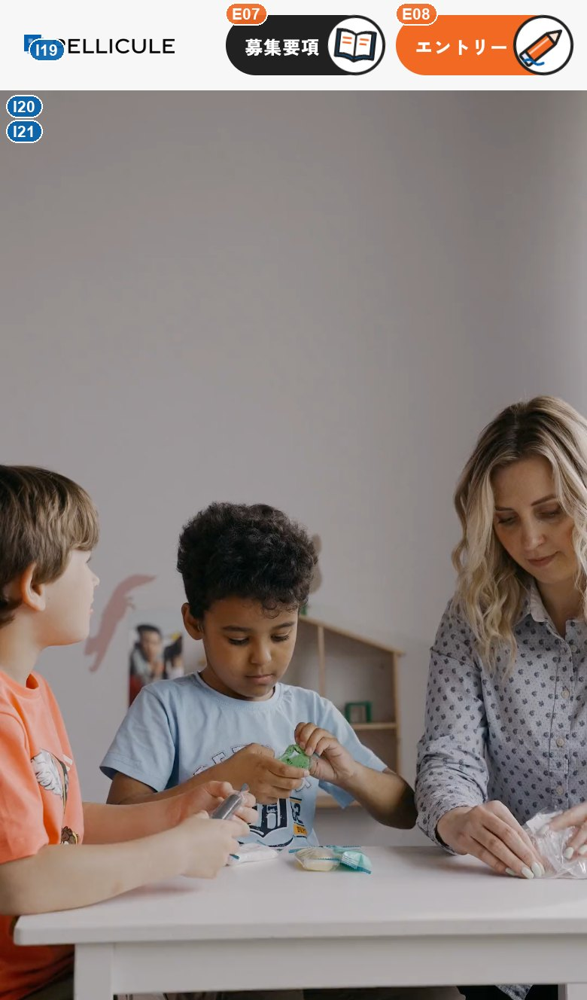
| 番号 | 場所 | 今の文言（冒頭） | 文字数の目安 |
|---|---|---|---|
| E09 | ページの題名(画面には出ない・読み上げと検索用) | PELLICULE株式会社児童指導員… | 現状25字｜画面には出ないので字数の制限なし。ただし長すぎない一文に |
| 番号 | 場所 | ファイル | 縦横比・サイズ |
|---|---|---|---|
| I20 | 背景動画(最初の画面) | assets/hero.mp4 | 動画 MP4・縦長9:16・元の大きさ 1080×1920px・容量2.0MB |
| I21 | 動画が始まる前に出る写真 | assets/hero-poster.jpg | 縦長9:16・元の大きさ 1080×1920px・JPG・容量95KB |
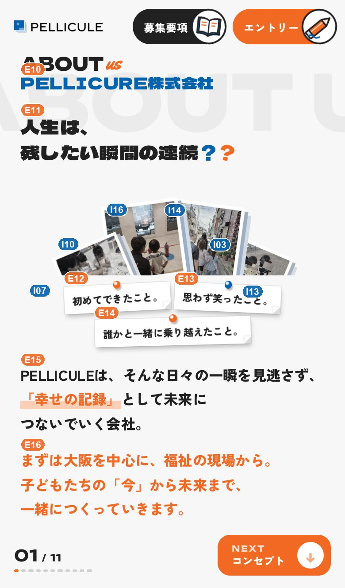
| 番号 | 場所 | 今の文言（冒頭） | 文字数の目安 |
|---|---|---|---|
| E10 | 見出し(会社名) | PELLICURE株式会社 | 現状13字→19字まで |
| E11 | 特大の言葉最後の「？」の飾り(class="qa" と class="q2")は消さない | 人生は、残したい瞬間の連続？ | 1行め：現状4字→15字まで 2行め：現状10字→14字まで |
| E12 | 付箋1 | 初めてできたこと。 | 現状9字(安全はこのまま・限界28字) |
| E13 | 付箋2 | 思わず笑ったこと。 | 現状9字→安全11字(限界17字) |
| E14 | 付箋3 | 誰かと一緒に乗り越えたこと。 | 現状14字→安全20字(限界22字) |
| E15 | 本文1「幸せの記録」の囲み(class="key mk")は残す | PELLICULEは、そんな日々の一… | 1行め：現状25字→28字まで 2行め：現状22字→24字まで |
| E16 | 本文2(オレンジ) | まずは大阪を中心に、福祉の現場から。… | 1行め：現状18字→20字まで 2行め：現状28字→36字まで |
| 番号 | 場所 | ファイル | 縦横比・サイズ |
|---|---|---|---|
| I13 | 写真(カメラのまわりを回る写真) | assets/photo/p13.webp | 縦横比 4:3・推奨 720×539px(元と同じ)・WebP・容量72KBこの場所の枠は1:1(表示は最大92×92px)・写真は枠に合わせて中央が自動で切り取られる同じファイルが4P・6Pでも使われている(1回の差し替えで全部変わる) |
| I03 | 写真(カメラのまわりを回る写真) | assets/photo/p03.webp | 縦横比 4:3・推奨 720×538px(元と同じ)・WebP・容量126KBこの場所の枠は1:1(表示は最大92×92px)・写真は枠に合わせて中央が自動で切り取られる同じファイルが7Pでも使われている(1回の差し替えで全部変わる) |
| I14 | 写真(カメラのまわりを回る写真) | assets/photo/p14.webp | 縦横比 3:4・推奨 960×1280px(元と同じ)・WebP・容量357KBこの場所の枠は1:1(表示は最大92×92px)・写真は枠に合わせて中央が自動で切り取られる同じファイルが7Pでも使われている(1回の差し替えで全部変わる) |
| I16 | 写真(カメラのまわりを回る写真) | assets/photo/p16.webp | 縦横比 3:4・推奨 960×1280px(元と同じ)・WebP・容量197KBこの場所の枠は1:1(表示は最大92×92px)・写真は枠に合わせて中央が自動で切り取られる同じファイルが5P・7Pでも使われている(1回の差し替えで全部変わる) |
| I10 | 写真(カメラのまわりを回る写真) | assets/photo/p10.webp | 縦横比 3:4・推奨 720×959px(元と同じ)・WebP・容量152KBこの場所の枠は1:1(表示は最大92×92px)・写真は枠に合わせて中央が自動で切り取られる同じファイルが7Pでも使われている(1回の差し替えで全部変わる) |
| I07 | 写真(カメラのまわりを回る写真) | assets/photo/p07.webp | 縦横比 3:4・推奨 720×959px(元と同じ)・WebP・容量134KBこの場所の枠は1:1(表示は最大92×92px)・写真は枠に合わせて中央が自動で切り取られる同じファイルが6Pでも使われている(1回の差し替えで全部変わる) |
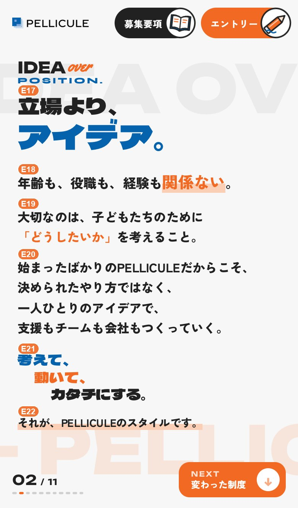
| 番号 | 場所 | 今の文言（冒頭） | 文字数の目安 |
|---|---|---|---|
| E17 | 見出し | 立場より、アイデア。 | 1行め：現状5字→安全12字(限界14字) 2行め：現状5字→安全8字(限界10字) |
| E18 | 大きな文「関係ない」の囲みは残す | 年齢も、役職も、経験も関係ない。 | 現状16字→安全18字(限界39字) |
| E19 | 本文1 | 大切なのは、子どもたちのために「どう… | 現状30字→安全35字(限界63字) |
| E20 | 本文2 | 始まったばかりのPELLICULEだ… | 1行め：現状23字→安全24字(限界47字) 2行め：現状13字→安全20字(限界46字) 3行め：現状29字→安全32字(限界62字) |
| E21 | 3つの言葉(考えて・動いて・カタチにする) | 考えて、動いて、カタチにする。 | 1行め：現状4字→安全18字(限界40字) 2行め：現状4字→安全17字(限界39字) 3行め：現状7字→安全15字(限界41字) |
| E22 | 結びの一文 | それが、PELLICULEのスタイル… | 現状21字→安全27字(限界60字) |
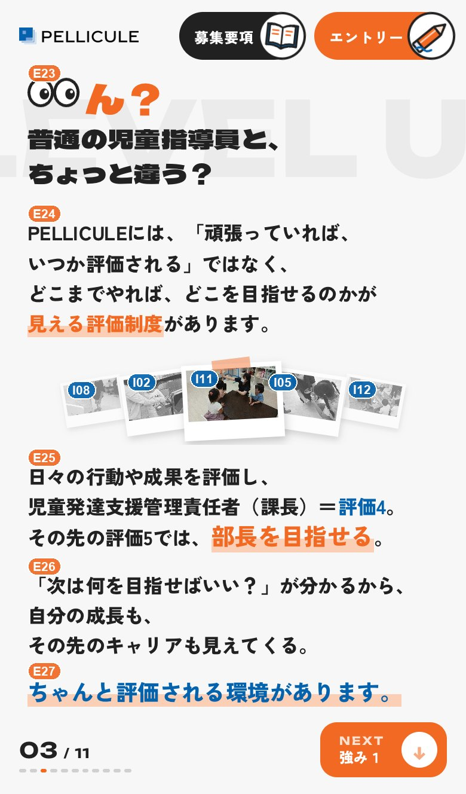
| 番号 | 場所 | 今の文言（冒頭） | 文字数の目安 |
|---|---|---|---|
| E23 | 特大の問いかけ先頭の「ん？」(class="hook")は変えない。変えるのは class="ln" の中の文だけ | ん？普通の児童指導員と、ちょっと違う… | 現状17字→18字まで |
| E24 | 本文1 | PELLICULEには、「頑張ってい… | 1行め：現状35字→安全41字(限界45字) 2行め：現状31字→安全38字(限界42字) |
| E25 | 評価の説明「評価4」「部長を目指せる」の囲みは残す | 日々の行動や成果を評価し、児童発達支… | 1行め：現状13字→安全20字(限界24字) 2行め：現状20字→安全21字(限界25字) 3行め：現状18字→安全20字(限界23字) |
| E26 | 本文2 | 「次は何を目指せばいい？」が分かるか… | 1行め：現状20字(安全はこのまま・限界24字) 2行め：現状22字→24字まで |
| E27 | 結びの一文(青) | ちゃんと評価される環境があります。 | 現状17字→安全18字(限界21字) |
| 番号 | 場所 | ファイル | 縦横比・サイズ |
|---|---|---|---|
| I11 | 写真(めくれる写真) | assets/photo/p11.webp | 縦横比 4:3・推奨 720×539px(元と同じ)・WebP・容量70KBこの場所の枠は7:4(表示は最大82×47px)・写真は枠に合わせて中央が自動で切り取られる同じファイルが7Pでも使われている(1回の差し替えで全部変わる) |
| I05 | 写真(めくれる写真) | assets/photo/p05.webp | 縦横比 4:3・推奨 1280×960px(元と同じ)・WebP・容量213KBこの場所の枠は7:4(表示は最大82×47px)・写真は枠に合わせて中央が自動で切り取られる同じファイルが7Pでも使われている(1回の差し替えで全部変わる) |
| I12 | 写真(めくれる写真) | assets/photo/p12.webp | 縦横比 4:3・推奨 720×539px(元と同じ)・WebP・容量89KBこの場所の枠は7:4(表示は最大82×47px)・写真は枠に合わせて中央が自動で切り取られる同じファイルが4Pでも使われている(1回の差し替えで全部変わる) |
| I08 | 写真(めくれる写真) | assets/photo/p08.webp | 縦横比 3:4・推奨 720×960px(元と同じ)・WebP・容量104KBこの場所の枠は7:4(表示は最大82×47px)・写真は枠に合わせて中央が自動で切り取られる同じファイルが7Pでも使われている(1回の差し替えで全部変わる) |
| I02 | 写真(めくれる写真) | assets/photo/p02.webp | 縦横比 3:4・推奨 720×960px(元と同じ)・WebP・容量152KBこの場所の枠は7:4(表示は最大82×47px)・写真は枠に合わせて中央が自動で切り取られる同じファイルが7Pでも使われている(1回の差し替えで全部変わる) |
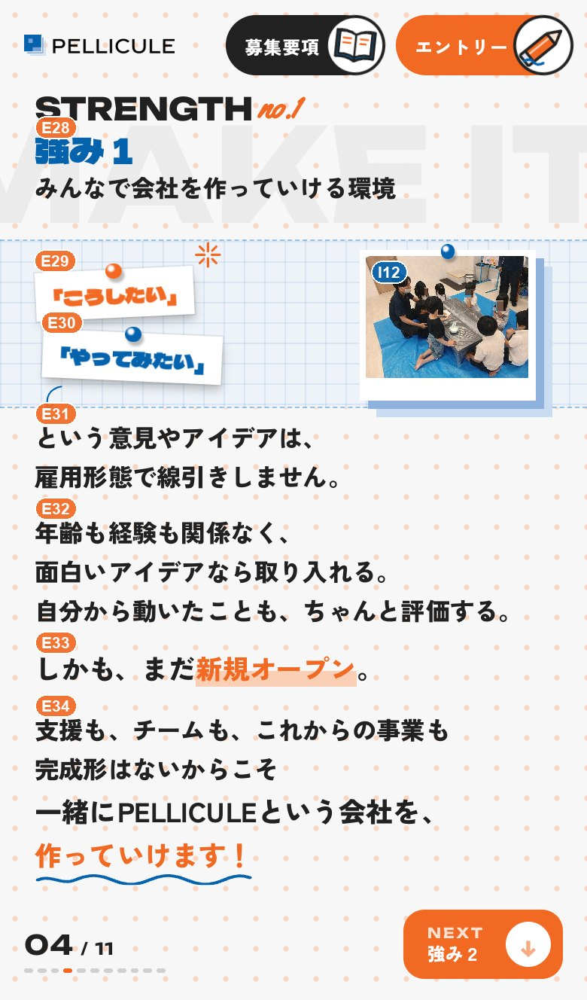
| 番号 | 場所 | 今の文言（冒頭） | 文字数の目安 |
|---|---|---|---|
| E28 | 見出し(番号と題名)1行目は「強み１」の番号、2行目が題名 | 強み１みんなで会社を作っていける環境 | 1行め：現状3字→安全14字(限界29字) 2行め：現状15字→安全21字(限界36字) |
| E29 | ふせん1 | 「こうしたい」 | 現状7字→安全11字(限界14字) |
| E30 | ふせん2 | 「やってみたい」 | 現状8字(安全はこのまま・限界14字) |
| E31 | 本文1 | という意見やアイデアは、雇用形態で線… | 1行め：現状12字→安全20字(限界32字) 2行め：現状13字→安全20字(限界33字) |
| E32 | 本文2 | 年齢も経験も関係なく、面白いアイデア… | 1行め：現状26字→安全31字(限界46字) 2行め：現状20字(安全はこのまま・限界40字) |
| E33 | 大きな文「新規オープン」の囲みは残す | しかも、まだ新規オープン。 | 現状13字→安全19字(限界32字) |
| E34 | 結びの文文末の波線(class="doodle d-wave" の svg)は消さない | 支援も、チームも、これからの事業も完… | 1行め：現状27字→安全37字(限界47字) 2行め：現状27字(安全はこのまま・限界58字) |
| 番号 | 場所 | ファイル | 縦横比・サイズ |
|---|---|---|---|
| I12 | 写真(掲示板に貼った写真) | assets/photo/p12.webp | 縦横比 4:3・推奨 720×539px(元と同じ)・WebP・容量89KBこの場所の枠は約4:3(表示は最大118×88px)・写真は枠に合わせて中央が自動で切り取られる同じファイルが3Pでも使われている(1回の差し替えで全部変わる) |
| I13 | 写真(掲示板に貼った写真) | assets/photo/p13.webp | 縦横比 4:3・推奨 720×539px(元と同じ)・WebP・容量72KB同じファイルが1P・6Pでも使われている(1回の差し替えで全部変わる) |
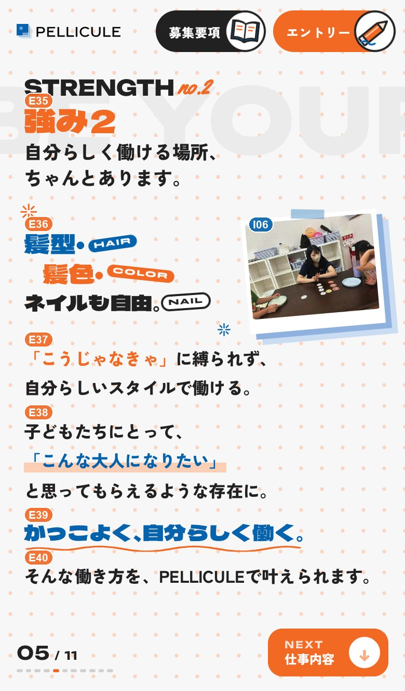
| 番号 | 場所 | 今の文言（冒頭） | 文字数の目安 |
|---|---|---|---|
| E35 | 見出し(番号と題名)1行目は「強み２」の番号、2行目が題名 | 強み２自分らしく働ける場所、ちゃんと… | 1行め：現状3字→安全11字(限界13字) 2行め：現状20字→22字まで |
| E36 | 髪型・髪色・ネイルHAIR / COLOR / NAIL の英字シール(class="page__label tagx")は変えない | 髪型・髪色・ネイルも自由。 | 1行め：現状3字→安全6字(限界14字) 2行め：現状3字→安全5字(限界14字) 3行め：現状7字→14字まで |
| E37 | 本文1 | 「こうじゃなきゃ」に縛られず、自分ら… | 1行め：現状15字→安全20字(限界24字) 2行め：現状14字→安全20字(限界24字) |
| E38 | 本文2 | 子どもたちにとって、「こんな大人にな… | 1行め：現状10字→安全20字(限界24字) 2行め：現状27字→安全32字(限界46字) |
| E39 | 特大の言葉文末の波線(svg)は消さない | かっこよく、自分らしく働く。 | 現状14字→安全17字(限界20字) |
| E40 | 結びの一文 | そんな働き方を、PELLICULEで… | 現状25字→28字まで |
| 番号 | 場所 | ファイル | 縦横比・サイズ |
|---|---|---|---|
| I06 | 写真 | assets/photo/p06.webp | 縦横比 4:3・推奨 720×539px(元と同じ)・WebP・容量81KBこの場所の枠は4:3(表示は最大156×117px)・写真は枠に合わせて中央が自動で切り取られる |
| I16 | 写真 | assets/photo/p16.webp | 縦横比 3:4・推奨 960×1280px(元と同じ)・WebP・容量197KB同じファイルが1P・7Pでも使われている(1回の差し替えで全部変わる) |
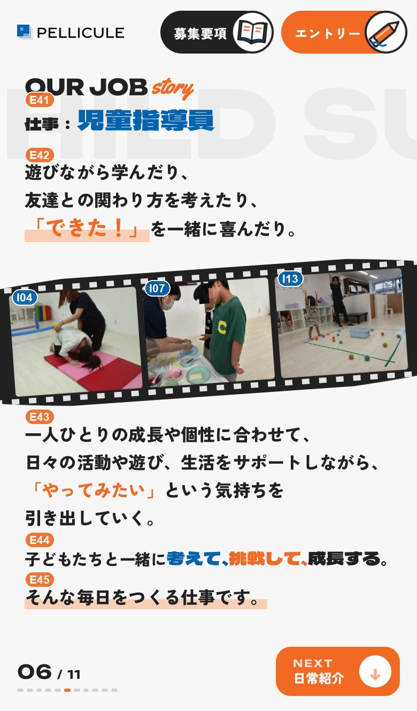
| 番号 | 場所 | 今の文言（冒頭） | 文字数の目安 |
|---|---|---|---|
| E41 | 見出し(仕事：児童指導員)1行目は「仕事：」、2行目が職種名 | 仕事：児童指導員 | 1行め：現状3字→21字まで 2行め：現状5字→13字まで |
| E42 | 本文1 | 遊びながら学んだり、友達との関わり方… | 1行め：現状10字→安全20字(限界30字) 2行め：現状14字→安全20字(限界34字) 3行め：現状15字→安全19字(限界35字) |
| E43 | 本文2 | 一人ひとりの成長や個性に合わせて、日… | 1行め：現状17字→安全20字(限界37字) 2行め：現状21字→安全24字(限界41字) 3行め：現状23字→安全24字(限界47字) |
| E44 | 3つの言葉(考えて・挑戦して・成長する)class="st1" st2" st3" の3つの区切りは残す | 子どもたちと一緒に考えて、挑戦して、… | 現状23字(安全はこのまま・限界46字) |
| E45 | 結びの一文 | そんな毎日をつくる仕事です。 | 現状14字→安全20字(限界34字) |
| 番号 | 場所 | ファイル | 縦横比・サイズ |
|---|---|---|---|
| I04 | 写真(白黒で並ぶ3枚) | assets/photo/p04.webp | 縦横比 3:4・推奨 960×1280px(元と同じ)・WebP・容量161KBこの場所の枠は5:4(表示は最大167×133px)・写真は枠に合わせて中央が自動で切り取られる |
| I07 | 写真(白黒で並ぶ3枚) | assets/photo/p07.webp | 縦横比 3:4・推奨 720×959px(元と同じ)・WebP・容量134KBこの場所の枠は5:4(表示は最大167×133px)・写真は枠に合わせて中央が自動で切り取られる同じファイルが1Pでも使われている(1回の差し替えで全部変わる) |
| I13 | 写真(白黒で並ぶ3枚) | assets/photo/p13.webp | 縦横比 4:3・推奨 720×539px(元と同じ)・WebP・容量72KBこの場所の枠は5:4(表示は最大167×133px)・写真は枠に合わせて中央が自動で切り取られる同じファイルが1P・4Pでも使われている(1回の差し替えで全部変わる) |
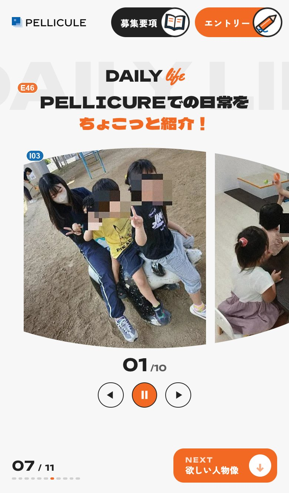
| 番号 | 場所 | 今の文言（冒頭） | 文字数の目安 |
|---|---|---|---|
| E46 | 見出し | PELLICUREでの日常をちょこっ… | 1行め：現状14字→安全16字(限界32字) 2行め：現状8字→安全15字(限界26字) |
| 番号 | 場所 | ファイル | 縦横比・サイズ |
|---|---|---|---|
| I03 | 写真(日常紹介の流れる写真) | assets/photo/p03.webp | 縦横比 4:3・推奨 720×538px(元と同じ)・WebP・容量126KBこの場所の枠は約9:10(表示は最大268×295px)・写真は枠に合わせて中央が自動で切り取られる同じファイルが1Pでも使われている(1回の差し替えで全部変わる) |
| I11 | 写真(日常紹介の流れる写真) | assets/photo/p11.webp | 縦横比 4:3・推奨 720×539px(元と同じ)・WebP・容量70KBこの場所の枠は約9:10(表示は最大268×295px)・写真は枠に合わせて中央が自動で切り取られる同じファイルが3Pでも使われている(1回の差し替えで全部変わる) |
| I05 | 写真(日常紹介の流れる写真) | assets/photo/p05.webp | 縦横比 4:3・推奨 1280×960px(元と同じ)・WebP・容量213KBこの場所の枠は約9:10(表示は最大268×295px)・写真は枠に合わせて中央が自動で切り取られる同じファイルが3Pでも使われている(1回の差し替えで全部変わる) |
| I10 | 写真(日常紹介の流れる写真) | assets/photo/p10.webp | 縦横比 3:4・推奨 720×959px(元と同じ)・WebP・容量152KBこの場所の枠は約9:10(表示は最大268×295px)・写真は枠に合わせて中央が自動で切り取られる同じファイルが1Pでも使われている(1回の差し替えで全部変わる) |
| I02 | 写真(日常紹介の流れる写真) | assets/photo/p02.webp | 縦横比 3:4・推奨 720×960px(元と同じ)・WebP・容量152KBこの場所の枠は約9:10(表示は最大268×295px)・写真は枠に合わせて中央が自動で切り取られる同じファイルが3Pでも使われている(1回の差し替えで全部変わる) |
| I01 | 写真(日常紹介の流れる写真) | assets/photo/p01.webp | 縦横比 約16:9・推奨 864×471px(元と同じ)・WebP・容量61KBこの場所の枠は約9:10(表示は最大268×295px)・写真は枠に合わせて中央が自動で切り取られる |
| I09 | 写真(日常紹介の流れる写真) | assets/photo/p09.webp | 縦横比 3:4・推奨 960×1280px(元と同じ)・WebP・容量186KBこの場所の枠は約9:10(表示は最大268×295px)・写真は枠に合わせて中央が自動で切り取られる |
| I14 | 写真(日常紹介の流れる写真) | assets/photo/p14.webp | 縦横比 3:4・推奨 960×1280px(元と同じ)・WebP・容量357KBこの場所の枠は約9:10(表示は最大268×295px)・写真は枠に合わせて中央が自動で切り取られる同じファイルが1Pでも使われている(1回の差し替えで全部変わる) |
| I08 | 写真(日常紹介の流れる写真) | assets/photo/p08.webp | 縦横比 3:4・推奨 720×960px(元と同じ)・WebP・容量104KBこの場所の枠は約9:10(表示は最大268×295px)・写真は枠に合わせて中央が自動で切り取られる同じファイルが3Pでも使われている(1回の差し替えで全部変わる) |
| I16 | 写真(日常紹介の流れる写真) | assets/photo/p16.webp | 縦横比 3:4・推奨 960×1280px(元と同じ)・WebP・容量197KBこの場所の枠は約9:10(表示は最大268×295px)・写真は枠に合わせて中央が自動で切り取られる同じファイルが1P・5Pでも使われている(1回の差し替えで全部変わる) |
7Pの写真は横に流れ続けます。写真は全部で10枚（I01・I02・I03・I05・I08・I09・I10・I11・I14・I16）で、上の表の番号ごとに差し替えます。画面に出ている写真だけ吹き出しをつけています。
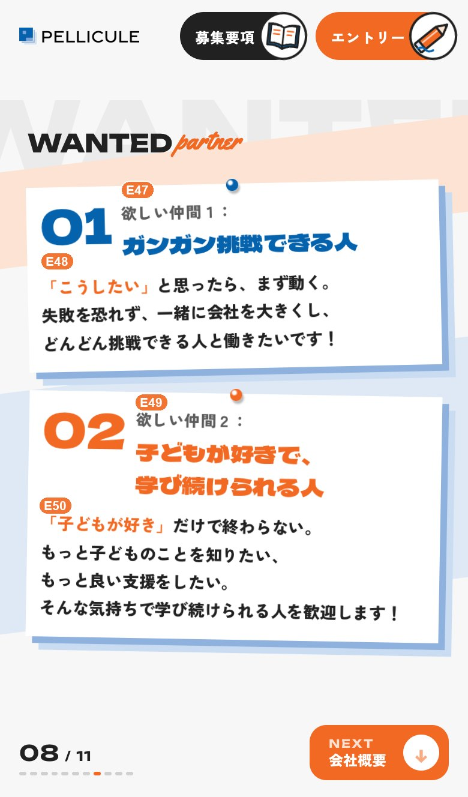
| 番号 | 場所 | 今の文言（冒頭） | 文字数の目安 |
|---|---|---|---|
| E47 | 仲間1の見出し1行目は「欲しい仲間１：」、2行目が題名 | 欲しい仲間１：ガンガン挑戦できる人 | 1行め：現状7字・被る心配なし(+60字まで確認) 2行め：現状10字→安全11字(限界13字) |
| E48 | 仲間1の説明 | 「こうしたい」と思ったら、まず動く。… | 1行め：現状18字・被る心配なし(+60字まで確認) 2行め：現状18字・被る心配なし(+60字まで確認) 3行め：現状18字・被る心配なし(+60字まで確認) |
| E49 | 仲間2の見出し2行目と3行目が題名(2行に分けてある) | 欲しい仲間２：子どもが好きで、学び続… | 1行め：現状7字・被る心配なし(+60字まで確認) 2行め：現状8字→13字まで 3行め：現状8字(安全はこのまま・限界12字) |
| E50 | 仲間2の説明 | 「子どもが好き」だけで終わらない。も… | 1行め：現状17字・被る心配なし(+60字まで確認) 2行め：現状15字・被る心配なし(+60字まで確認) 3行め：現状12字・被る心配なし(+60字まで確認) 4行め：現状22字・被る心配なし(+60字まで確認) |
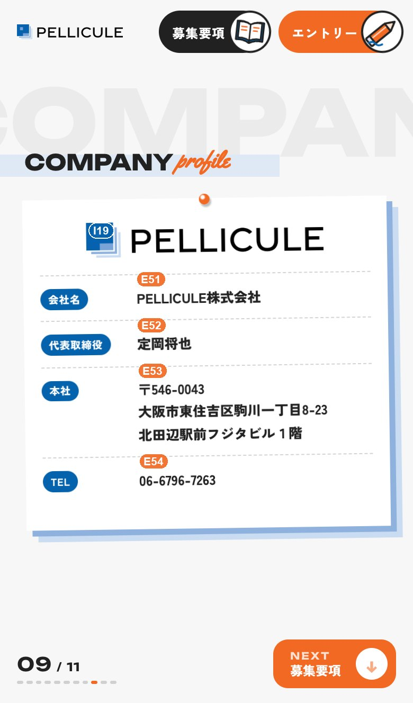
| 番号 | 場所 | 今の文言（冒頭） | 文字数の目安 |
|---|---|---|---|
| E51 | 会社名 | PELLICULE株式会社 | 現状13字・被る心配なし(+60字まで確認) |
| E52 | 代表者名 | 定岡将也 | 現状4字・被る心配なし(+60字まで確認) |
| E53 | 本社の住所2行に分けてある(郵便番号と住所／建物名) | 〒546-0043大阪市東住吉区駒川… | 1行め：現状25字・被る心配なし(+60字まで確認) 2行め：現状12字・被る心配なし(+60字まで確認) |
| E54 | 電話番号 | 06-6796-7263 | 現状12字・被る心配なし(+60字まで確認) |
| 番号 | 場所 | ファイル | 縦横比・サイズ |
|---|---|---|---|
| I19 | ロゴ | assets/img/logo.png | 横長約6.8:1・背景が透明なPNG・元の大きさ 3072×454px・容量12KB同じファイルが共通(PC左帯)・共通(ヘッダー)でも使われている(1回の差し替えで全部変わる) |
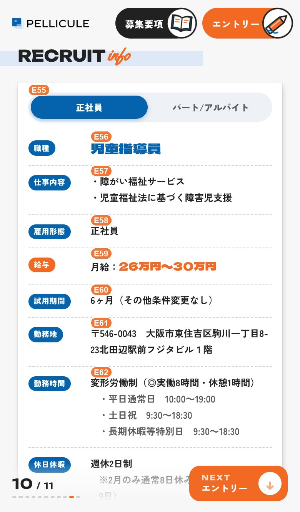
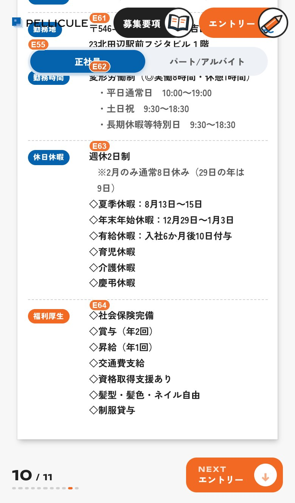
| 番号 | 場所 | 今の文言（冒頭） | 文字数の目安 |
|---|---|---|---|
| E55 | タブ(正社員／パート/アルバイト)2つのボタンの文字だけ。data-t="1" などは変えない | 1行め：現状3字のまま 2行め：現状9字のまま | |
| E56 | 職種 | 児童指導員 | 現状5字→12字まで |
| E57 | 仕事内容 | ・障がい福祉サービス・児童福祉法に基… | 1行め：現状10字→18字まで 2行め：現状15字→18字まで |
| E58 | 雇用形態①②の番号(<i>)は残す | 正社員パート/アルバイト | 1行め：現状3字→18字まで 2行め：現状9字→19字まで |
| E59 | 給与金額は class="req__pay" の中。①②の番号(<i>)は残す | 月給：26万円〜30万円時給：1,4… | 1行め：現状12字→17字まで 2行め：現状10字→19字まで |
| E60 | 試用期間 | 6ヶ月（その他条件変更なし） | 現状14字→19字まで |
| E61 | 勤務地 | 〒546-0043大阪市東住吉区駒川… | 現状37字→42字まで |
| E62 | 勤務時間行(class="ln")を増やす時は、隣の行をコピーして文だけ変える | 変形労働制（◎実働8時間・休憩1時間… | 1行め：現状19字のまま(増やせない) 2行め：現状19字→21字まで 3行め：現状17字→22字まで 4行め：現状14字→22字まで 5行め：現状19字→22字まで |
| E63 | 休日休暇行(class="ln")を増やす時は、隣の行をコピーして文だけ変える | 週休2日制※2月のみ通常8日休み（2… | 1行め：現状5字→19字まで 2行め：現状21字→25字まで 3行め：現状15字→21字まで 4行め：現状19字→22字まで 5行め：現状17字→20字まで 6行め：現状5字→18字まで 7行め：現状5字→18字まで 8行め：現状5字→18字まで |
| E64 | 福利厚生t1 / t2 は正社員・パート切り替え用なので変えない | ◇社会保険完備◇社会保険あり（健康保… | 1行め：現状7字→18字まで 2行め：現状18字のまま(増やせない) 3行め：現状8字→19字まで 4行め：現状8字→19字まで 5行め：現状6字→18字まで 6行め：現状9字→18字まで 7行め：現状12字→18字まで 8行め：現状5字→18字まで |
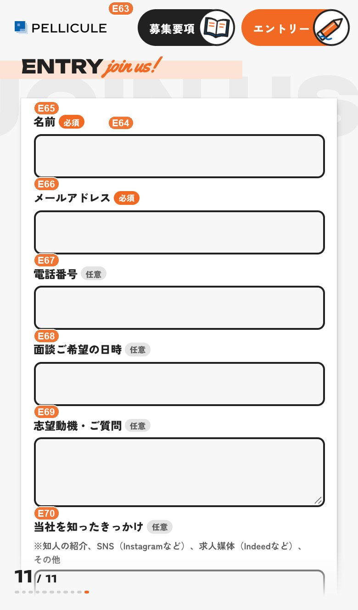
| 番号 | 場所 | 今の文言（冒頭） | 文字数の目安 |
|---|---|---|---|
| E65 | 入力欄の名前「名前」(必須)の部分(<b>)は残す | 名前 | 現状2字→23字まで |
| E66 | 入力欄の名前「メールアドレス」(必須)の部分は残す | メールアドレス | 現状7字→23字まで |
| E67 | 入力欄の名前「電話番号」(任意)の部分は残す | 電話番号 | 現状4字→23字まで |
| E68 | 入力欄の名前「面談ご希望の日時」(任意)の部分は残す | 面談ご希望の日時 | 現状8字→23字まで |
| E69 | 入力欄の名前「志望動機・ご質問」(任意)の部分は残す | 志望動機・ご質問 | 現状8字→23字まで |
| E70 | 入力欄の名前「当社を知ったきっかけ」と、その下の注意書き注意書きは class="entry__hint" の中 | 当社を知ったきっかけ | 1行め：現状10字→23字まで 2行め：現状42字→46字まで |
募集要項は「正社員」「パート/アルバイト」の2つのタブで中身が切り替わります。表の行の中の t1 は正社員、t2 はパート/アルバイトの行です。
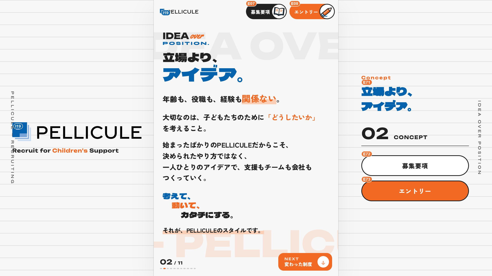
スマホでは見えない、PCで広い画面にしたときだけ出る右側と、全ページの上に出るヘッダーです。
| 番号 | 場所 | 今の文言（冒頭） | 文字数の目安 |
|---|---|---|---|
| E07 | 右上ボタン「募集要項」svgの絵(<svg>〜</svg>)は消さない | 募集要項 | 現状4字のまま |
| E08 | 右上ボタン「エントリー」svgの絵は消さない | エントリー | 現状5字のまま |
| E71 | PC表示だけの右側の言葉改行は <br> | 立場より、アイデア。 | 現状10字のまま |
| E72 | PC表示だけのボタン「募集要項」 | 募集要項 | 現状4字のまま |
| E73 | PC表示だけのボタン「エントリー」 | エントリー | 現状5字のまま |
| 番号 | 場所 | ファイル | 縦横比・サイズ |
|---|---|---|---|
| I19 | ロゴ | assets/img/logo.png | 横長約6.8:1・背景が透明なPNG・元の大きさ 3072×454px・容量12KB同じファイルが共通(ヘッダー)・会社概要でも使われている(1回の差し替えで全部変わる) |
| I19 | ロゴ | assets/img/logo.png | 横長約6.8:1・背景が透明なPNG・元の大きさ 3072×454px・容量12KB同じファイルが共通(PC左帯)・会社概要でも使われている(1回の差し替えで全部変わる) |
| I19 | ロゴ | assets/img/logo.png | 横長約6.8:1・背景が透明なPNG・元の大きさ 3072×454px・容量12KB同じファイルが共通(PC左帯)・共通(ヘッダー)でも使われている(1回の差し替えで全部変わる) |
ブラウザのタブや検索結果、LINE・SNSでシェアした時に出る文言です。サイトの画面には出ません。社名や公開アドレスが決まったら、ここを直してください。
| 番号 | 場所 | 今の文言（冒頭） | 文字数の目安 |
|---|---|---|---|
| E01 | ブラウザのタブ名・検索結果の見出しここを変えたら og:title(E04)も同じ文に | PELLICULE株式会社｜児童指導… | 現状25字｜画面の見た目には影響しない。検索結果で切れにくいのは30字前後まで(一般的な目安・実測ではない) |
| E02 | 検索結果の説明文ここを変えたら og:description(E05)も同じ文に | PELLICULE株式会社採用サイト… | 現状37字｜画面の見た目には影響しない。検索結果で切れにくいのは120字前後まで(一般的な目安・実測ではない) |
| E03 | OGP 社名(シェア時のサイト名)社名が変わったらここも | PELLICULE株式会社採用サイト | 現状19字｜シェア画面の表示。現状の長さまでを目安に(実測ではない) |
| E04 | OGP タイトル(LINE・SNSでシェアした時の見出し) | PELLICULE株式会社｜児童指導… | 現状25字｜画面の見た目には影響しない。シェア時に切れにくいのは40字前後まで(一般的な目安・実測ではない) |
| E05 | OGP 説明文(シェアした時の説明) | PELLICULE株式会社採用サイト… | 現状37字｜画面の見た目には影響しない。シェア時に切れにくいのは100字前後まで(一般的な目安・実測ではない) |
| E06 | OGP URL(公開するアドレス)公開先が決まったら、og:image と twitter:image の https://〜 の頭も同じアドレスに | https://pellicule-… | https:// から始まる公開アドレス。文字数の制限なし |
| E09 | ページの題名(画面には出ない・読み上げと検索用) | PELLICULE株式会社児童指導員… | 現状25字｜画面には出ないので字数の制限なし。ただし長すぎない一文に |
| 番号 | 場所 | ファイル | 縦横比・サイズ |
|---|---|---|---|
| I22 | OGP画像(LINE・SNSでシェアした時の写真) | assets/ogp.jpg | 縦横比 約1.9:1・1200×630px(元と同じ。シェア用画像で一般的な大きさ)・JPG・容量111KB |
TOPの動画（I20）と、動画が始まる前に出る写真（I21）は、TOPの表にあります。
< と > で囲まれた部分や、class="…" の中身は、見た目や動きを決める部品です。消したり直したりすると、文字が出なくなったり、レイアウトが崩れたりします。<span class="ln">）を増やさない・減らさない。改行したいときは <br> です。<svg>…）や、class="key"・class="mk" の囲みを消さない。マーカーや波線などの飾りです。<!-- 〜 -->）を消さない。消すと、次に探せなくなります。style.css・tokens.css・script.js・pel.js は開かない・直さないでください。直したページで、次を確認してください。
index.html をChromeで開く。実際のスマホで見るときは、担当者に修正後のフォルダを渡してください。